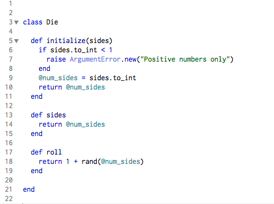

Jenny
Lee
Ruby Classes
072015
What is a class?
Below we have an example of a class called Die
In the example above, we have created a class Die that has three methods:
initialize
sides
roll
These methods are defined within the Die class, making them instance methods
. This just means that these methods can be used by any and all instances of our class Die.For instance... in our example above, you can call upon any of these methods on Die.
For example, if I wanted to create a die with 6 sides, I would write...
my_die = Die.new(6)
and if I wanted to see how many sides my_die has, I just have to call it like so...
my_die.sides
and it would output => 6
Another important thing to mention are instance variables.
Instance variables are different from regular variables in that they can be called upon anytime and anywhere within that class by any method defined by that class.
In other words, instance variables can be used by different methods as long as they are all within the same class.
They look different from the variables we are used to by the addition of one symbol: @ that precedes the variable name.
So in our example above, our instance variable is @num_sides.
Because @num_sides is an instance variable, it can be used in all three methods (initialize, sides, and roll) without it having to be redefined for each method.
Instance variables are great because not only do they allow our code to look a bit more concise and neat, but it saves a lot of time and prevents redundancy!